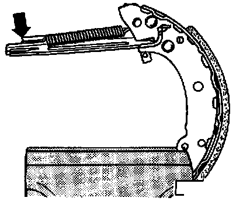
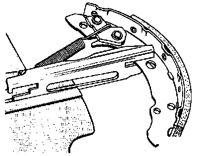
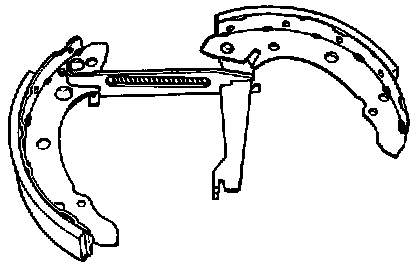

Brake Shoe: Service and Repair

Component Notes And Information
NOTE:
^ During removal and installation procedures, refer to the component location illustration above and component notes below.
^ After working on the rear brakes, release the parking brake, depress the brake pedal once and then adjust the parking brake.
CAUTION
^ Do not re-use fasteners that are worn or deformed in normal use.
^ Some fasteners are designed to be used only once, and are unreliable and may fail if used a second time. This includes, but is not limited to, nuts, bolts, washers, circlips and cotter pins.
^ Always follow recommendations in these instructions, replace these fasteners with new parts where indicated, and any other time it is deemed necessary by inspection.
1 Spring retainer
- To remove push against spring and turn 90°
2 Spring
3 Brake shoe with lever for parking brake
- Removing and installing, refer to procedures below
- Adjusting parking brake.
- Minimum lining thickness: 2.5 mm (0.098 inch)
4 Upper return spring
- Unhook with pliers
5 Lower return spring
- Lubricate contact points with G6 grease
6 Wedge spring
7 Brake shoe
- Removing and installing, refer to procedures below
- Adjusting parking brake.
- Minimum lining thickness: 2.5 mm (0.098 inch)
8 Support buttons (Not applicable to USA/Canada)
9 Not applicable to USA/Canada
10 Cap
- Remove to check brake lining wear
11 Tensioning pin
12 Backing plate
13 Socket-head bolt
- Tighten to: 10 Nm (7 ft lb)
14 Wheel cylinder
- Checking. Testing and Inspection
15 Adjusting wedge
- To remove and install brake drum work through wheel bolt hole to push wedge up
16 Push rod
- Lubricate contact points with G6 grease
17 Locating spring
Removal
- Remove brake drum, refer to Replacement. Service and Repair
- Remove spring retainers and unhook lower return spring.
- Remove brake shoes.
- Unhook parking brake cable.
- Clamp brake shoes in vice.

- Remove wedge spring (right arrow) and upper return spring (left arrow).

- Unhook locating spring (arrow).
Installation

- Connect locating spring and insert brake shoe into slot in push rod.
- Insert wedge.

- Insert brake shoe with brake lever in push rod.
- Connect upper return spring.
- Connect parking brake cable to brake lever.
- Place brake shoes on wheel cylinder pistons.
- Connect lower return spring and install brake shoes onto lower support.
- Install wedge spring, springs and retainers.
- Install brake drum and adjust wheel bearing.
- Depress brake pedal firmly one time to set self-adjusting mechanism.